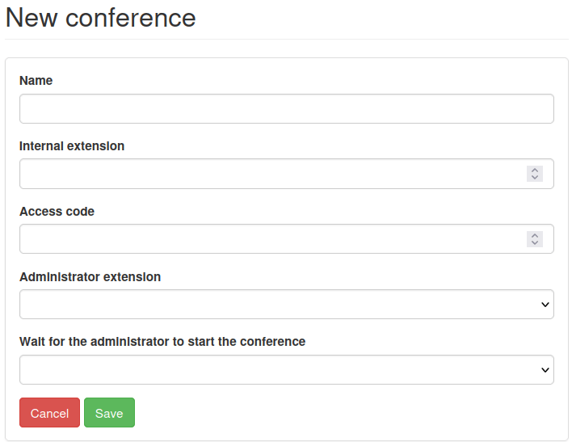
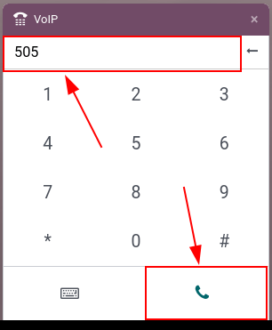

Conferencia telefónica¶
Las conferencias telefónicas ayudan a que los empleados puedan conectar rápido y de forma eficiente para discutir asuntos como si fuera un foro de discusión abierta. Puede imponer un código de inicio de sesión para limitar a los asistentes, así podrá cuidar la información privada.
Este documento describe la configuración de las conferencias telefónicas en Axivox para su uso en la VoIP de Odoo.
Agregar una conferencia virtual¶
Vaya a la consola de gestión de Axivox para agregar una sala de conferencia virtual. Después de iniciar sesión, haga clic en Conferencias ubicado en el menú de la izquierda.
Después, haga clic en el botón verde llamado Agregar una conferencia y aparecerá un formulario de Conferencia nueva.
Una vez aquí, complete el campo Nombre y configure una extensión interna.
La extensión interna es lo que todos en la red usarán para conectarse a la llamada de conferencia en lugar de tener que escribir el número de teléfono completo.
Truco
Seleccione un número que incluya entre tres y cinco dígitos, para que sea fácil de recordar y marcar.
Después configure el código de acceso si la sala de conferencias requiere seguridad. Esta es una contraseña para entrar a la conferencia después de que se haya marcado la extensión de la conferencia. Después de marcar la extensión, un asistente virtual le pedirá el código de acceso.
En el campo Extensión del administrador haga clic en el menú desplegable y seleccione la extensión del usuario que gestionará la llamda.
Finalmente en el campo Wait for the administrator to start the conference (esperar a que el administrador inicie la conferencia) haga clic en el botón desplegable y seleccione Sí o No.
Si selecciona Sí entonces nadie podrá utilizar la sala de conferencia virtual hasta que el administrador llegue y se conecte a la llamada.
Después de que haya llenado todos los campos, asegúrese de Guardar la configuración. Después, haga clic en Aplicar cambios en la esquina superior derecha para implementar el cambio en la producción.
Al hacerlo, la conferencia se agregará y el administrador de Axivox tendrá la opción de Borrar o Editar la conferencia desde el tablero inicial Conferencia de Axivox.
Para invitar a un usuario de Axivox a una llamada de conferencia en específico, haga clic en Invitar a la derecha de la conferencia deseada y después ingrese la extensión o número telefónico del invitado en la pestaña emergente que aparece.
Una vez que se agregue la extensión o el número al campo Please enter the phone number of the person you want to invite (ingrese el número telefónico de la persona a la que quiere invitar) haga clic en el botón verde Invite (invitar) y el destinatario recibirá una llamada telefónica que lo vinculará en automático a la conferencia.

Números entrantes¶
Para que más personas puedan ingresar a una conferencia, puede vincular una conferencia de Axivox a números entrantes
Para hacerlo, ingrese a la consola de gestión de Axivox y haga clic en el menú Incoming numbers (números entrantes), que se encuentra en el menú de la izquierda.
En el tablero de Incoming numbers (números entrantes) haga clic en el botón Editar que se encuentra a la derecha del Number (número) al cual se debe vincular la conferencia.
Después, en el primer campo llamado Destination type for voice call (tipo de destino para una llamada de voz) haga clic en el menú desplegable y seleccione Conferencia.
Después, en el campo Conferencia haga clic en el menú desplegable y seleccione una conferencia específica que adjuntar al número entrante.
Ahora siempre que se marque el número entrante, la persona quien llama irá directo a la conferencia, sin necesidad de un Código de acceso, a no ser que se haya configurado de otra manera y la persona que llama tenga que ingresar un Código de acceso para ingresar a la conferencia.
Iniciar una llamada en Odoo¶
En cualquier parte de su base de datos de Odoo puede abrir el widget de VoIP, solo tiene que hacer clic en el icono ☎️ (teléfono) ubicado en la esquina superior derecha. Después, marque el número de la extensión específica para la conferencia y haga clic en el icono 📞 (teléfono).
Cuando la asistente virtual responda, ingrese el Código de acceso (si se necesita) y presione la tecla o el icono # (numeral).